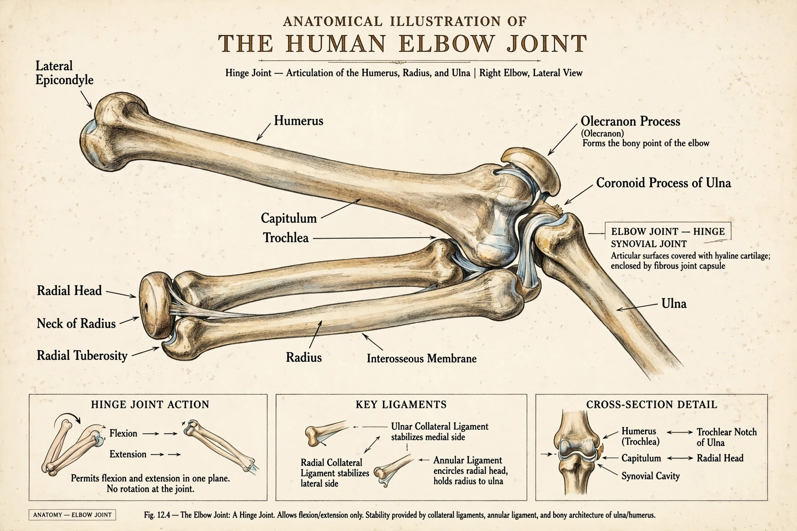

| Elbow | |
|---|---|
 | |
| System | Musculoskeletal |
| Joint type | Hinge synovial joint |
| Bones | Humerus, radius, ulna |
The elbow is the region between the upper arm and forearm, centred on the elbow joint — a hinge synovial joint between the humerus above and the radius and ulna below. It allows flexion and extension of the forearm, while the associated radioulnar joints allow pronation and supination.
The trochlea of the humerus articulates with the trochlear notch of the ulna, and the capitulum with the head of the radius, all within a single joint capsule. Collateral ligaments — medial (ulnar) and lateral (radial) — provide stability. The olecranon forms the bony point of the elbow; the ulnar nerve passes behind the medial epicondyle (the "funny bone").
Conditions include lateral epicondylitis (tennis elbow), medial epicondylitis (golfer's elbow), olecranon bursitis, dislocation, fractures, cubital tunnel syndrome, and gout affecting the joint.